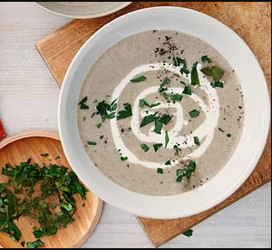

Mushroom soup

Description
Make the most of mushrooms with this comforting mushroom soup recipe made with cream, onions and garlic. Serve for lunch or as a starter with crusty bread
- Prep: 10 mins
- Cook: 25 mins
- Serves: 4
Ingredients
- 90g butter
- 2 medium onions, roughly chopped
- 1 garlic clove, crushed
- 500g mushrooms, finely chopped (chestnut or button mushrooms work well)
- 2 tbsp plain flour
- 1l hot chicken stock
- 1 bay leaf
- 4 tbsp single cream
- small handful flat-leaf parsley, roughly chopped, to serve (optional)
Steps
- Heat the butter in a large saucepan and cook the onions and garlic until soft but not browned, about 8-10 mins.
- Add the mushrooms and cook over a high heat for another 3 mins until softened. Sprinkle over the flour and stir to combine. Pour in the chicken stock, bring the mixture to the boil, then add the bay leaf and simmer for another 10 mins.
- Remove and discard the bay leaf, then remove the mushroom mixture from the heat and blitz using a hand blender until smooth. Gently reheat the soup and stir through the cream (or, you could freeze the soup at this stage – simply stir through the cream when heating). Scatter over the parsley, if you like, and serve.
Back to Homepage